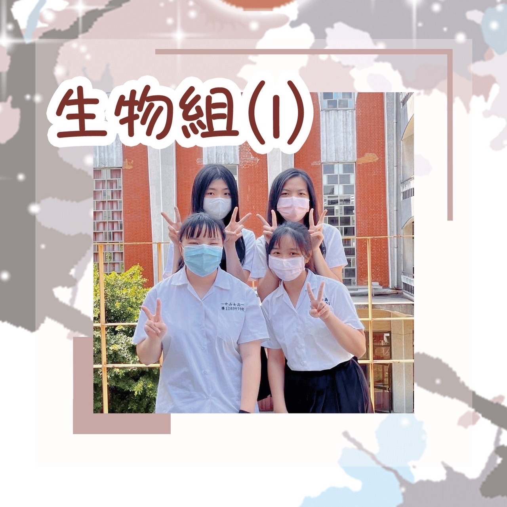
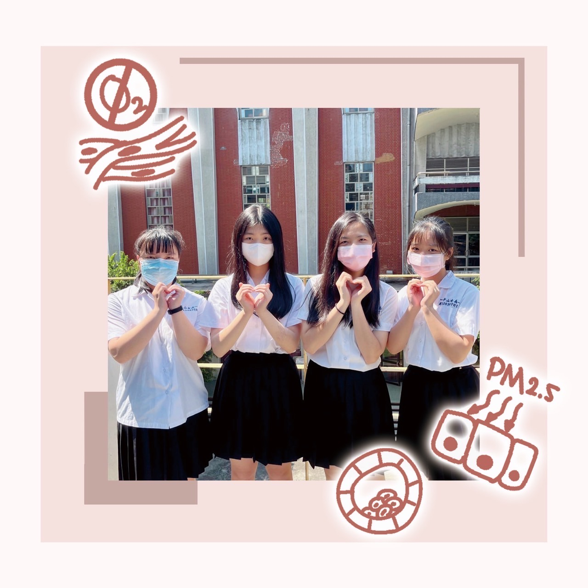
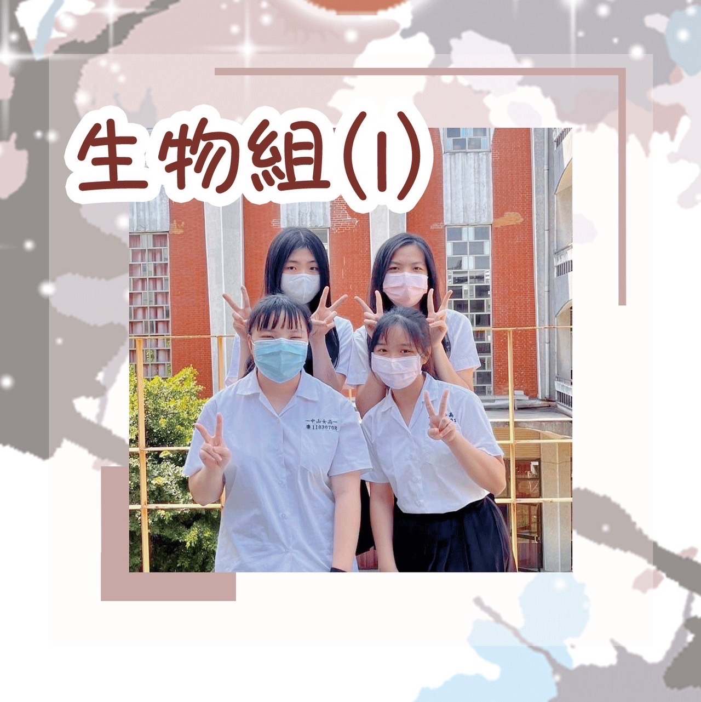
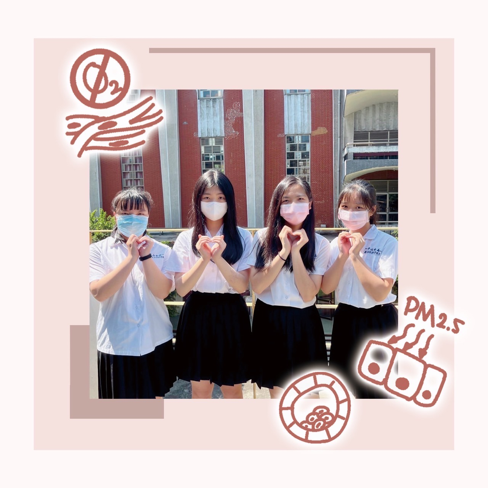

組員：周沛嫺、許文禕
寒暑假幾乎是住在實驗室了兩人，立志把北車美食都吃過一遍，還會偷聽實驗室的姐姐都去哪裡吃飯😗但選擇障礙的兩個人每次都要從十點就開始想午餐吃什麼...太久了吧😏😏
細胞培養完都會用Parafilm(膠帶)把medium 封起來。文文小朋友都會衝上去拿她最喜歡的膠帶，然而屢次膠帶都會無情地在她的手中斷裂🥹；然而後面的沛沛一接手，咻一聲，膠帶就被乖乖的黏上瓶子，瀟灑地走出無菌操作室，留下想好好跟膠帶做朋友的文禕（據說後來有一次成功了，就開心地在實驗室跳上跳下😁
組員：林靖穎
看起來溫柔漂亮，但她打起人來有夠兇。暴力女子🔥🈶️
遇到別人長得比較可愛就會淪陷，國中的時候甚至捏班上最可愛同學的臉捏了三年🤣現在甚至看到帥哥還會偷詢問哀居🤣
對鞋子懂非常多，看鞋子的眼光非常精準且有料，有跟鞋子穿搭的相關問題都可以問這位master😎
在妳心情不好像是考試考不好或其他生活的相關煩惱都可以找她，一定可以得到非常好的建議及安慰，甚至還會讀心術😱
含蓄又內斂，妥妥氣質美女！
買東西的眼光真的超好，看上的東西不僅好看，而且還很有質感，真的是貨物鑑別師🧐
組員：高潔羽
潔羽是畫畫高手，通常有美宣工作時就會選美宣。廉班美術事務沒人處理時就要麻煩她了🥺
組員：吳欣盈、謝允馨
身為實驗室在遙遠石牌區的欣盈和允馨 不是常常追著陽明校車跑 就是急著趕捷運 花在交通上的錢應該是相當可觀 ㊗️她們以後能跟校車和平相處
從藥物壞掉開始 接連發生了一堆衰事 X光機壞掉、教授確診、允馨確診 讓她們的進度嚴重落後 不知道是不是平常做太少好事了 以後可能要多扶老太太過馬路才能改運啊🥹🫵🏻
組員：詹千幼、謝昕彤
生物組的玉米是長不大的小孩，導致千幼和昕彤每天都在祈禱玉米豐收，不然數據會趕不出來(☍﹏⁰。)
黴菌每次都是千幼昕彤和玉米的電燈泡，提早把玉米吃掉了叫人家怎麼約會嘛
有一次千幼把透明法要用的酒精帶回家，結果瓶子破了一個洞，隔天整罐酒精消失了。
在住吉高校的科學論壇上，她們其實冷得發抖，但被強迫不能穿外套，因此只能在台上抖抖抖(。﹏。)
每次用顯微鏡看細胞，終於看到它時，然後它又不見了。